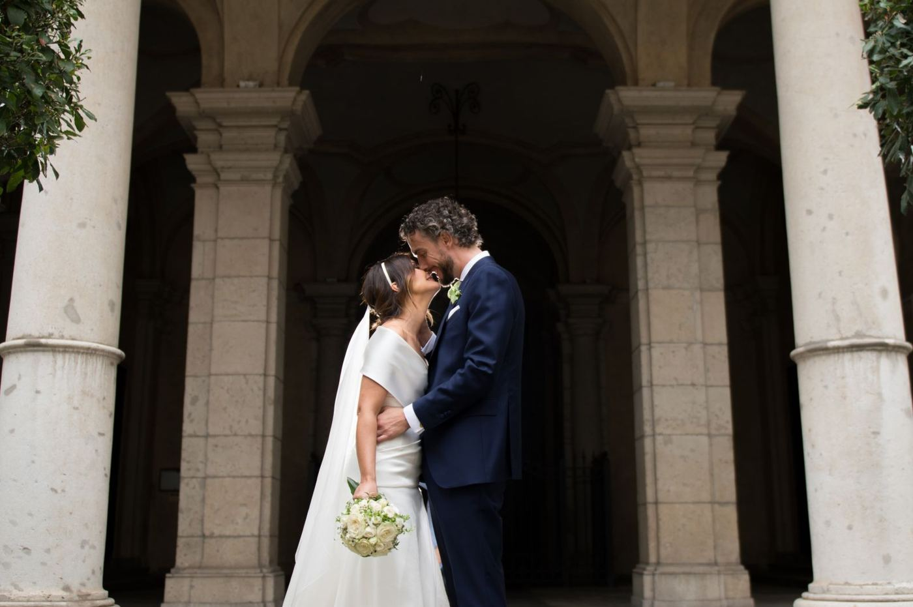
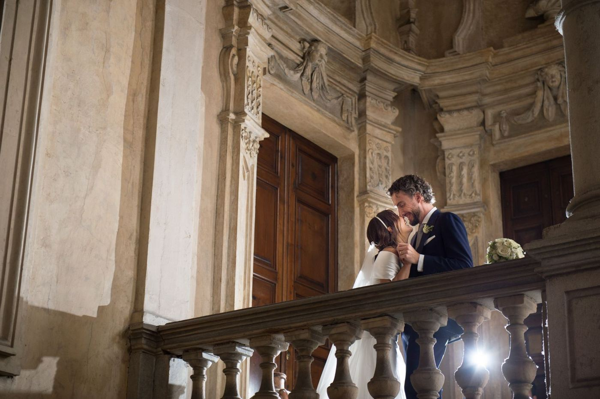
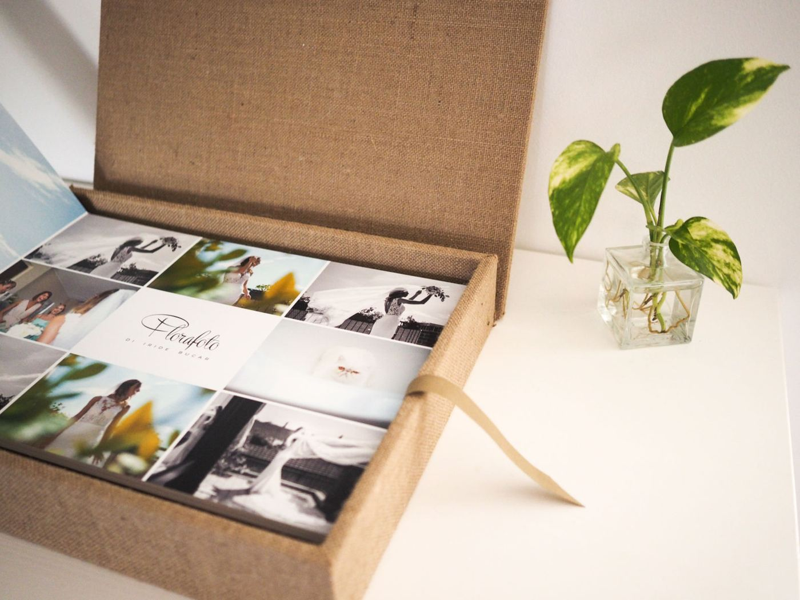
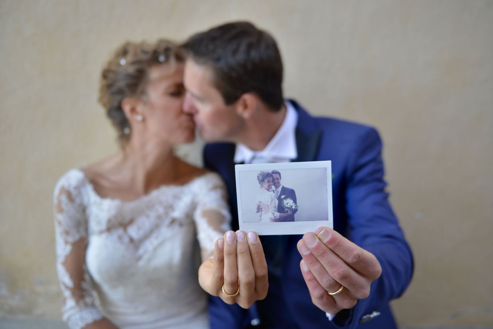
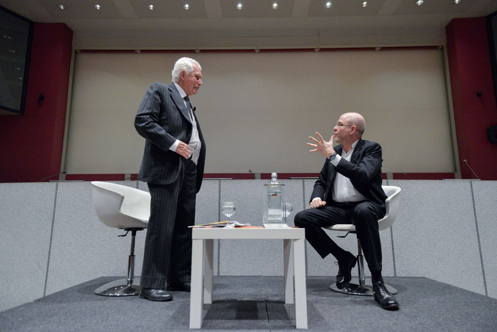
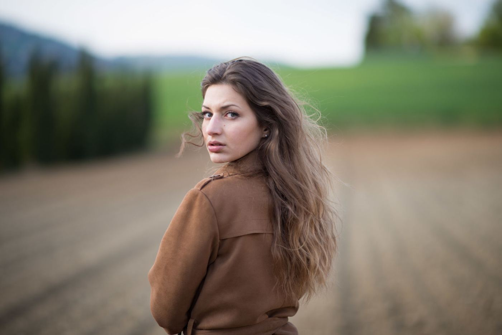
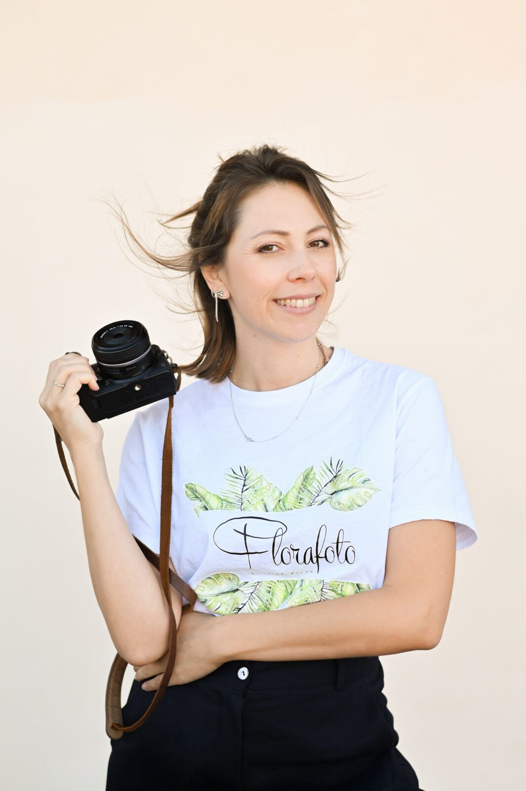

Prematrimoniale
Uno shooting di coppia di circa due ore, pensato per conoscerci. Entrerete in sintonia con l'obiettivo, e potrete annunciare le nozze con una foto vostra.
Circa due oreMatrimoni, eventi e scatti personali. Cerco la naturalezza e le emozioni dietro a ogni scatto, camminando in punta di piedi.
Foto eleganti ma non artificiose, naturali nelle luci e nelle pose.
Lo stile Florafoto
Nel giorno piu importante della vostra vita, affidatevi a chi puo accompagnarvi con delicatezza, professionalita e creativita. Lo stile Florafoto punta sull'unicita degli scatti, fatti senza invadere la sfera personale di sposi e ospiti.
Fotografare un matrimonio significa catturare con discrezione e sensibilita l'intera giornata, per permettervi di rivivere negli anni quell'emozione unica. Con la coppia mi piace instaurare un rapporto di fiducia sereno e sincero: dopo i primi attimi in cui vi abituerete alla mia presenza, i miei scatti coglieranno sia i momenti tradizionali che quelli piu naturali.
Ci si incontra prima. Capiamo insieme com'e organizzata la giornata, cosi non si perde neanche un istante.
Si parte dallo sposo. Arriviamo insieme a lui, in chiesa o in comune, per gli abbracci con parenti e amici.
Mai da sola. Un'assistente lavora con me, come supporto silenzioso e discreto per ogni situazione.
Quattro servizi che si tengono insieme, dal primo shooting di coppia al fotolibro che resta in casa.
Uno shooting di coppia di circa due ore, pensato per conoscerci. Entrerete in sintonia con l'obiettivo, e potrete annunciare le nozze con una foto vostra.
Circa due ore
L'intera giornata, dai preparativi alla festa. Niente lasciato al caso, e nessuna posa forzata: la spontaneita, i sorrisi, e i dettagli che non tornano.
Con assistente
Le foto arrivano su chiavetta USB, ma il fotolibro si sfoglia. Scegliete grandezza, grafica, colori e stoffe. Se avete una stoffa a cui tenete, si usa quella.
Su misuraCon video maker professionisti che condividono il mio modo di ritrarre la coppia e la giornata: delicatezza, sensibilita, presenza discreta.
Team dedicato
Il servizio prematrimoniale e un vero shooting di coppia, dove iniziamo a conoscerci. Serve a ricavare in modo delicato e graduale le note caratteriali dei due futuri sposi, e della coppia.
Entrambi entrerete in sintonia con la macchina e con l'obiettivo.
Si creera un'atmosfera piu informale e leggera con lo staff, con cui farete amicizia.
Potrete annunciare le nozze con una foto creativa e unica.
Compleanni, convegni, ritratti, famiglie. Cambia l'occasione, non il modo di stare in mezzo alle persone.
Diciotto anni, quaranta o ottanta. Prima della festa mi prendo almeno mezz'ora con chi festeggia, per conoscerci ed entrare in confidenza con la macchina.
Compleanni e ricorrenze
Dopo un primo briefing lavoro sulla scaletta, sugli orari e sui momenti stabiliti. Sapere cosa cerca l'azienda negli scatti e la meta del lavoro.
Convegni e congressi
Scegliamo insieme il luogo, si valuta un cambio d'abito, e si comincia. Tutte le fotografie in alta risoluzione su chiavetta, a colori e in bianco e nero.
In esterna
Ritratti che catturano emozione, espressivita e individualita. Post produzione naturale: non rendo mai le foto artificiose.
Anche pubblicitario
Passione, dolcezza e professionalita, discrezione, gentilezza e affidabilita: sono i valori di Florafoto, immutati dal momento in cui l'avventura e iniziata, circa quindici anni fa.
Da quando la mia passione piu grande si e trasformata nel mio lavoro, un passo alla volta, affiancando all'esperienza una continua formazione tecnica, ho affinato il mio stile, naturale e fresco, e mi sono specializzata nel wedding.
Ho scoperto che per fare un lavoro ottimo serve lavorare di squadra. Negli anni ho conosciuto quelli che oggi sono il mio team: persone che condividono i miei ideali e la mia sensibilita, e che mi affiancano agli eventi. Il nostro motto e al momento giusto, al posto giusto.
Riusciamo a essere presenti sempre, con discrezione, per ritrarre ogni emozione, dalla piu piccola alla piu importante. Gestire i tempi e fondamentale: solo cosi la cura per i dettagli resta altissima, senza trascurare la spontaneita.
Iride Bucar
Hai qualche domanda? Vuoi conoscere maggiori informazioni sui preventivi dei vari servizi? Scrivimi e saro felice di risponderti.
Florafoto di Iride Bucar, Via Palmieri 54, Torino
Chiavetta USB con tutte le fotografie in alta risoluzione, a colori e in bianco e nero
{kind=link}
{kind=link}
{kind=link}
{kind=link}
{kind=link}
{kind=link}
{kind=link}
{kind=link}
{kind=link}
{kind=link}
{kind=link}
{kind=link}
{kind=link}
{kind=link}
{kind=link}
{kind=link}
{kind=link}
{kind=link}
{kind=link}
{kind=link}